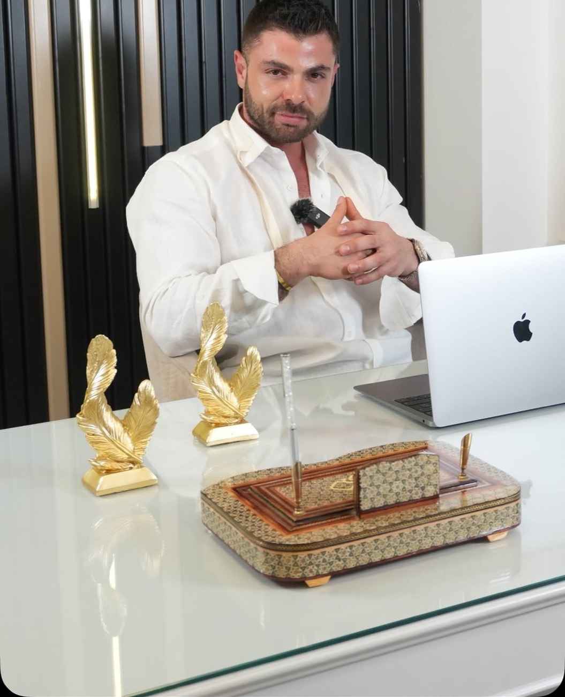

Elmacık Dolgusu
Orta yüzde kaybolan hacmi destekleyerek daha dinç bir görünüm.

Elmacık Dolgusu nedir?
Elmacık kemiği dolgusu, yüzün orta kısmında bulunan zigomatik kemiklerin (elmacık kemikleri) projeksiyonunu artırmak ve çevresindeki yumuşak doku yetersizliğini gidermek için cildin derin katmanlarına hacim sağlayan maddelerin enjekte edildiği minimal invaziv bir yöntemdir. Yüzün güzellik ve gençlik standardı olan “Altın Oran” estetiğinde önemli bir yer tutan bu kemikler, yüzün üst kısmının daha hacimli, alt kısmının ise daha ince ve zarif görünmesine katkı sağlar. Bu işlem, sadece hacim kazandırmaktan öte, yüzün bütünü üzerinde çarpıcı ve gençleştirici etkiler yaratır. Bu etkiler aşağıdaki gibidir.
Belirgin Kontur ve V Şekli: Yüze daha keskin ve çekici bir kontur kazandırarak, yüzün gençlikle ilişkilendirilen üçgen veya kalp şeklini vurgular.
Lifting Etkisi: Orta yüzdeki hacim artışı, sarkmaya başlayan alt yüz dokularına bir kaldırma kuvveti yani lifting uygular. Bu sayede, burun kenarından dudaklara inen nazolabial oluklar ve alt çene hattındaki hafif sarkmaların görünümü önemli ölçüde yumuşar.
Daha Genç ve Canlı Görünüm: Yanak dolgusu sayesinde yanaklardaki çökük görünüm ortadan kalkar, bu da kişiye daha dinlenmiş, enerjik ve sağlıklı bir ifade katar.
Simetri ve Orantı: Yüzdeki asimetrileri dengelemek ve göz altı/tear trough ile yanak arasındaki yumuşak geçişi sağlamak amacıyla da stratejik olarak kullanılabilir.
Elmacık Kemiği Dolgusunu Kimler Yaptırabilir?
Elmacık kemiği dolgusu, hem yüz hatlarını yapısal olarak iyileştirmek isteyen genç bireylere hem de yaşlanmaya bağlı hacim kaybı yaşayan kişilere güvenle uygulanabilen bir prosedürdür. Uygulama için öncelikle yüz hatlarının daha keskin ve konturlu olmasını arzu eden, ancak genetik olarak elmacık kemikleri düz veya zayıf olan bireyler uygun adaylardır. Aynı zamanda yüz şeklini daha oval veya V şekline dönüştürmek isteyen, yüzünün yuvarlaklığından şikayetçi olanlar da bu uygulamayı tercih edebilir.
Yapısal ihtiyaçların yanı sıra, yaşlanmaya bağlı olarak elmacık kemiği üzerindeki yağ yastıkçıklarının erimesi ve kemik yapısının değişimi sonucu yanaklarda çökme ve düzleşme yaşayanlar, dolgu sayesinde kaybettikleri genç ve dinamik ifadeyi geri kazanabilir. Yanak dolgusu ve elmacık kemiği dolgusu, orta yüzdeki desteğin azalmasına bağlı olarak ciltte oluşan sarkmayı ve derinleşen nazolabial kıvrımları hafifletmek amacıyla da sıkça uygulanır.
Aşırı kilo kaybı yaşayan ve bu nedenle yüzü çökmüş görünen kişilerde de hacim kazandırma amacıyla tercih edilmektedir. Ancak, prosedürün uygulanmaması gereken bazı durumlar da mevcuttur; hamile veya emziren kadınlara, uygulama bölgesinde aktif bir enfeksiyon, iltihap veya uçuk olan kişilere, kanama bozuklukları olan veya kullanılan dolgu maddesine alerjisi olduğu bilinen kişilere bu işlem önerilmemektedir.
Elmacık Kemiği Dolgusu Ne Kadar Süre Etkilidir?
Elmacık kemiği dolgusunun etkisi, kullanılan materyale ve kişisel faktörlere bağlı olarak geniş bir aralıkta yer alır. Elmacık kemiği dolgusu sürekli kalıcı bir uygulama değildir. Kalıcılık süreleri ve bunu etkileyen faktörler aşağıda belirtilmiştir.
Hyaluronik Asit Dolguları: Kalıcılık süresi genellikle 9 ila 18 ay arasında değişir. Bu süre, yüksek yoğunluklu dolguların daha uzun süre dayanması ile ilişkilidir.
Elmacık Kemiği Yağ Dolgusu: Kendi yağ dokusu ile yapılan dolgular, 2 ila 5 yıla kadar veya daha uzun süreli, yarı kalıcı sonuçlar sunabilir.
Bireysel Faktörler: Kişinin metabolizma hızı, sigara ve alkol tüketimi, aşırı güneşe maruz kalma ve yoğun fiziksel aktivite gibi yaşam tarzı faktörleri dolgunun ömrünü kısaltabilir.
Bu sitedeki içerikler yalnızca bilgilendirme amaçlıdır; kâr ve rekabet amacı içermez. Tanı ve tedavi için lütfen hekiminize başvurunuz. Tüm uygulamalar hekim muayenesi sonrasında kişiye özel olarak planlanır; sonuçlar kişiden kişiye farklılık gösterebilir.
Bunlar da ilginizi çekebilir
Muayene için randevu oluşturun
Size en uygun uygulamayı muayene sonrasında, yüz anatomiziniz ve beklentileriniz doğrultusunda birlikte planlayalım.